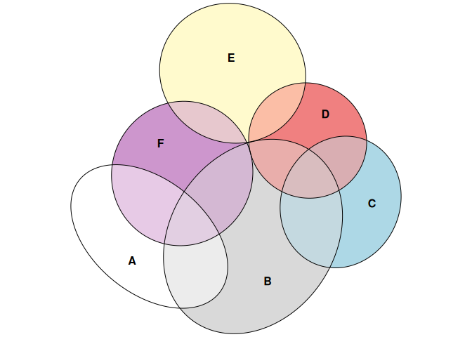

eulerr generates area-proportional Euler diagrams that display set relationships (intersections, unions, and disjoints) with circles or ellipses. Euler diagrams are Venn diagrams without the requirement that all set interactions be present (whether they are empty or not), which means that, depending on input, eulerr sometimes produces Venn diagrams and sometimes not.
With three or more sets intersecting, exact Euler diagrams are often impossible. For such cases eulerr attempts to provide a good approximation by numerically tuning the parameters of the ellipses or circles to minimize the error in the resulting diagram. Residuals and goodness of fit statistics are provided to assess whether the resulting diagram can be trusted.
Installation
Shiny app
eulerr is also available as a shiny app hosted at eulerr.co.
Usage
library(eulerr)
# From Wilkinson 2012
fit <- euler(c("A" = 4, "B" = 6, "C" = 3, "D" = 2, "E" = 7, "F" = 3,
"A&B" = 2, "A&F" = 2, "B&C" = 2, "B&D" = 1,
"B&F" = 2, "C&D" = 1, "D&E" = 1, "E&F" = 1,
"A&B&F" = 1, "B&C&D" = 1),
shape = "ellipse")We can inspect the goodness-of-fit metrics diagError and stress for the solution,
and plot it

Please see the introductory vignette for a brief introduction or eulerr under the hood for details.
License
eulerr is open source software, licensed under GPL-3.
Versioning
eulerr uses semantic versioning.
Code of conduct
Please note that this project is released with a Contributor Code of Conduct. By participating in this project you agree to abide by its terms.